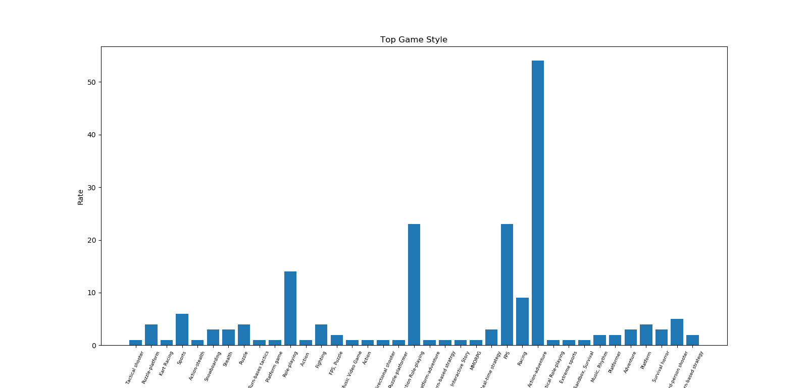

ประเภทของแนวเกมที่คนชอบเล่นมากที่สุด 2000-2018

5 อันดับแนวเกมที่มีคนเล่นมากที่สุด
| Name |
Rate |
| Action-adventure |
มากกว่า 50% |
| FPS |
มากกว่า 20% |
| Action Role-playing |
มากกว่า 20% |
| Roleplaying |
มากกว่า10% |
| Racing |
10% |
ประเภทของวิดีโอเกม
แบ่งลักษณะ ได้ตามการเล่นออกเป็นประเภทต่าง ๆ ได้ ดังนี้
เกมแอ็คชั่น (Action Game) เป็นประเภทเกมที่ใช้การบังคับทิศทางและการกระทำของตัวละครในเกมเพื่อผ่านด่านต่าง ๆ ไปให้ได้ มีตั้งแต่เกมที่มีรูปแบบง่าย ๆ เหมาะกับคนทุกเพศทุกวัย เช่น มาริโอ ร็อคแมน ไปจนถึงเกมแอ็คชั่นที่มีเนื้อหารุนแรงไม่เหมาะกับเด็ก ๆ บางเกมมีการใส่ลูกเล่นต่าง ๆ เข้ามาเพิ่มความสนุกของเกมจนกลายเป็นเกมแนวใหม่ไปเลยเกมเล่นตามบทบาท (Role-Playing Game) หรือ อาร์พีจี (RPG) หรือที่นิยมเรียกกันว่าเกมภาษา เป็นเกมที่พัฒนามาจากเกมสวมบทบาทแบบตั้งโต๊ะ เนื่องจากในช่วงแรกเกมอาร์พีจีที่ออกมาจะเป็นภาษาอังกฤษหรือญี่ปุ่นซึ่งต้องใช้ความรู้ด้านภาษานั้น ๆ ในการเล่น เกมประเภทนี้จะกำหนดตัวผู้เล่นอยู่ในโลกที่สมมติขึ้น และให้ผู้เล่นสวมบทบาทเป็นตัวละครหนึ่งในโลกนั้น ๆ ผจญภัยไปตามเนื้อเรื่องที่กำหนด โดยมีจุดเด่นทางด้านการพัฒนาระดับของตัวละคร (Experience-ประสบการณ์) เก็บเงินซื้ออาวุธ, อุปกรณ์ เมื่อผจญภัยไปมากขึ้นและเอาชนะศัตรูตัวร้ายที่สุดในเกม ตัวเกมไม่เน้นการบังคับหวือหวา แต่จะให้ผู้เล่นสัมผัสกับเรื่องราวแทน เกม RPG จะถูกแบ่งออกเป็นสองลักษณะใหญ่ ๆเกมผจญภัย (Adventure Game) เป็นเกมที่ผู้เล่นจะสวมบทบาทเป็นตัวละครตัวหนึ่งและต้องกระทำเป้าหมายในเกมให้สำเร็จลุล่วงไปได้ เกมผจญภัยนั้นถูกสร้างครั้งแรกในรูปแบบของ Text Based Adventure จนกลายมาเป็นแบบ Graphic Adventure เกมผจญภัยจะเน้นหนักให้ผู้เล่นหาทางออกหรือไขปริศนาในเกม โดยส่วนมากปริศนาในเกมจะเน้นใช้ตรรกะแก้ปัญหาและใช้สิ่งของที่ผู้เล่นเก็บมาระหว่างผจญภัย นอกจากนั้นผู้เล่นยังคงต้องพูดคุยกับตัวละครตัวอื่น ๆ ทำให้เกมประเภทนี้ผู้เล่นต้องชำนาญด้านภาษามาก ๆ เกมผจญภัยส่วนมากมักจะไม่มีการตายเพื่อให้ผู้เล่นได้มีเวลาวิเคราะห์ปัญหาข้างหน้าได้ หรือถ้ามีการตายในเกมผจญภัยมักจะถูกวางไว้แล้วว่าผู้เล่นจะตายตรงไหนได้บ้างเกมปริศนา (Puzzle Game) เป็นเกมแนวที่เล่นได้ทุกวัย ตัวเกมมักจะเน้นการแก้ปริศนา ปัญหาต่าง ๆ มีตั้งแต่ระดับง่ายไปจนถึงซับซ้อน ในอดีตตัวเกมมักนำมาจากเกมปริศนาตามนิตยสาร เช่นเกมตัวเลข เกมอักษรไขว้ ต่อมาจึงมีเกมปริศนาที่เล่นบนคอมพิวเตอร์อย่างเกมเตตริสออกมา ปัจจุบันมีเกมแนวพัซเซิลแบบใหม่ ๆ ออกมามากมาย เกมแนวนี้เป็นเกมที่เล่นได้ทุกยุคทุกสมัย จึงเป็นเรื่องปกติที่จะเห็นผู้เล่นบางคนยังติดใจกับเกมเตตริส เกมอาร์คานอยด์ ไปจนถึงเกมพัซเซิลใหม่ ๆ อย่าง Polarium และ Puzzle Bubble เกมปริศนาเป็นเกมที่ไม่เน้นเรื่องราวแต่จะเน้นไปที่ความท้าทายให้ผู้เล่นกลับมาเล่นซ้ำ ๆ ในระดับที่ยากขึ้นเกมการจำลอง (Simulation Game) เป็นเกมประเภทที่จำลองสถานการณ์ต่าง ๆ มาให้ผู้เล่นได้สวมบทบาทเป็นผู้อยู่ในสถานการณ์นั้น ๆ และตัดสินใจในการกระทำเพื่อลองดูว่าจะเป็นอย่างไร เหตุการณ์ต่าง ๆ อาจจะนำมาจากสถานการณ์จริงหรือสถานการณ์สมมติก็ได้เกมวางแผนการรบ (Strategy Game) เป็นประเภทเกมที่แยกออกมาจากประเภทเกมการจำลอง เนื่องจากในระยะหลังเกมประเภทนี้มีแนวทางของตัวเองที่ชัดเจนขึ้น คือเกมที่เน้นการควบคุมกองทัพซึ่งประกอบไปด้วยหน่วยทหารย่อย ๆ เข้าเข้าทำการสู้รบกัน พบมากในเครื่องคอมพิวเตอร์เนื่องจากคีย์บอร์ดและเมาส์นั้นมีความเหมาะสมต่อการควบคุมเกม และมักจะสามารถเล่นร่วมกันได้หลายคนผ่านทางอินเทอร์เน็ตหรือผ่านระบบแลนอีกด้วย เนื้อเรื่องในเกมมีได้หลายหลายรูปแบบ แล้วแต่เกมนั้น ๆ จะกำหนด ตั้งแต่จับความสไตล์เวทมนตร์คาถา พ่อมด กองทหารยุคกลาง ไปจนถึงสงครามระหว่างดวงดาวเลยก็มี รูปแบบการเล่นหลัก ๆ ของเกมประเภทนี้มักจะเป็นการควบคุมกองทัพ, เก็บเกี่ยวทรัพยากร และสร้างกองทัพ เกมวางแผนการรบแบ่งออกเป็นสองประเภทตามการเล่นเกมกีฬา (Sport Game) เป็นกึ่ง ๆ เกมจำลองการเล่นกีฬาแต่ละชนิด โดยส่วนมากเกมกีฬามักจะมีความถูกต้องและเที่ยงตรงในกฎกติกาค่อนข้างมาก จึงเหมาะสำหรับผู้เล่นที่เข้าใจกฎกติกาและการเล่นของกีฬานั้น ๆ โดยส่วนมาจุดขายของเกมกีฬามักจะเป็นชื่อและหน้าตาของผู้เล่นที่ถูกต้อง, ลักษณะสนามและยานพาหนะ ตัวอย่างเกมกีฬาได้แก่ FIFA (ฟุตบอล) , วินนิ่งอีเลฟเว่น (ฟุตบอล) , Madden NFL (อเมริกันฟุตบอล) และ NBA LIVE (บาสเกตบอล)เกมอาเขต (Arcade Game) คือเกมที่ถูกสร้างมาให้กับเครื่องเกมตู้ โดยส่วนมากเกมประเภทนี้มักจะใช้เวลาจบไม่นาน (ไม่เกิน 30 นาที หรือ ไม่เกิน 1 ชั่วโมง) เน้นความเรียบง่ายของตัวเกม มักมีเวลาจำกัดในการเล่นและมักจะไม่มีการบันทึกความก้าวหน้าในการเล่น เกมจะบันทึกเพียงคะแนนสูงสุดเท่านั้น เกมประเภทนี้มักมีความท้าทายของระดับความยากง่ายดึงดูดใจให้ผู้เล่นกลับมาเล่นซ้ำและใช้หลักจิตวิทยาในการบอก "คะแนนสูงสุด" ที่ผู้เล่นคนก่อน ๆ เคยทำไว้ ให้ผู้เล่นใหม่ ๆ หาทางทำลายสถิติเกมต่อสู้ (Fighting Game) คือเกมที่เป็นลักษณะเอาตัวละครสองตัวขึ้นไปมาต่อสู้กันเอง ลักษณะเกมประเภทนี้จะเน้นให้ผู้เล่นใช้จังหวะและความแม่นยำกดท่าโจมตีต่าง ๆ ออกมา จุดสำคัญที่สุดในเกมต่อสู้คือการต่อสู้ต้องถูกแบ่งออกเป็นยก ๆ และจะมีเพียงผู้เล่นเพียงสองฝ่ายเท่านั้นและตัวละครที่ใช้จะต้องมีความสามารถที่ต่างกันออกไป เกมประเภทนี้ที่ได้รับความนิยมได้แก่ เทคเคน, สตรีทไฟท์เตอร์, เดอะคิงออฟไฟท์เตอร์สปาร์ตี้เกม (Party Game) คือเกมที่มีการบรรจุเกมย่อย ๆ มากมายเอาไว้ โดยในแต่ละเกมย่อยจะมีกฎและกติกาที่ต่างกันออกไป โดยผู้เล่นจะต้องเข้าไปเล่นในเกมย่อยนั้น ๆ และหาทางแข่งขันกับผู้เล่นอื่น ๆ ให้ชนะ (ทั้งคอมพิวเตอร์และผู้เล่นที่เป็นมนุษย์ด้วยกันเอง) จุดขายของปาร์ตี้เกมคือการเล่นเป็นหมู่คณะ ซึ่งจะสร้างความบันเทิงได้มากกว่าการเล่นคนเดียว เกมประเภทนี้ที่ได้รับความนิยมได้แก่ Mario Partyเกมดนตรี (Music Game) คือเกมที่ผู้เล่นต้องใช้เสียงเพลงในการเล่นด่านต่าง ๆ ให้ชนะ ซึ่งผู้เล่นจะต้องกดปุ่มให้ถูกต้องหรือตรงจังหวะหรือตรงตำแหน่ง โดยใช้เสียงเพลงเป็นตัวบอกเวลาที่จะต้องกด เกมประเภทนี้ที่ได้รับความนิยมได้แก่ Pop n' Music, โอ๊ทส์! ทาทาคาเอะ! โอเอนดัน แต่ในขณะเดียวกันบางเพลงผู้เล่นจะต้องใช้อุปกรณ์เสริมซึ่งบางชิ้นก็เลียนแบบมาจากของจริงเช่น แดนซ์ แดนซ์ เรโวลูชัน (แผ่นเต้น) , Guitar Hero (กีตาร์) , Karaoke Revolution (ไมโครโฟน) , Rock Band (กลองชุด, กีตาร์, ไมโครโฟน)เกมเพื่อการศึกษา (Game for Education) คือส่งเสริมในเรื่องของทางด้านการศึกษา โดยอาจนำเนื้อหาที่มีตามบทเรียนนำมาสร้างเป็นเกมหรืออาจจะนำเนื้อหาสาระต่าง ๆ ที่นอกเหนือจากตำราเรียนนำมาประยุกต์ใช้ ซึ่งช่วยให้ผู้เรียนเกิดแรงกระตุ้นในการเรียนรู้ ซึ่งส่งผลให้ผู้เรียนเกิดการพัฒนาหลาย ๆ ด้าน ทั้งการเรียน สังคม ฯลฯ เช่น Eternal Story (เกมต่อสู้)เกมออนไลน์ (Online Game) คือเกมที่เป็นลักษณะที่มีผู้เล่นหลายคน ผ่านระบบอินเทอร์เน็ต โดยที่จะมีตัวละครเล่นแทนตัวเรา มีการพูดคุยกันในเกม สร้างสังคมช่วยกันต่อสู้ เก็บประสบการณ์ หรือ โดยเกมออนไลน์ส่วนมากจะเป็นเกมประเภท MMORPG ซึ่งผู้เล่นแต่ละคนจะสวมบทบาทเป็นตัวละครตัวหนึ่งในโลก สร้างสังคมออนไลน์ ในเกมสามารถสร้างห้องขึ้นมาเพื่อพูดคุยแลกเปลี่ยน มีการส่งข้อความถึงกันได้ในเกม เกมออนไลน์ เกมแรกที่เปิดให้บริการในประเทศไทยคือเกม King of Kings
|